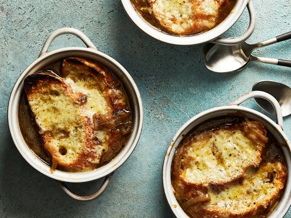

French Onion Soup

A gooey, savory delight.
In 1954, what was then called the Food News Department of The New York Times released a pamphlet simply called “Soups,” which had 20 recipes for soups “thick and thin, hot and cold,” including those for minestrone, shrimp bisque and this French onion soup.
We’ve updated the recipe adding sherry and wine to layer in more flavors. The bulk of the time is spent on caramelizing the onions, a process that always takes longer than it seems it should. But it’s worth the wait.
Ingredients
- 3 tablespoons unsalted butter
- 3 to 4 large red or yellow onions, peeled and thinly sliced
- 3/4 teaspoon kosher salt, plus more to taste
- 2 quarts beef stock
- 1 cup dry white wine
- 1 tablespoon dry sherry
- 1 tablespoon all-purpose flour
- 1/2 teaspoon black pepper, plus more to taste
- 8 to 12 (1/2 inch) slices French bread
- 1 1/2 cups grated Gruyere cheese
Steps
- Melt butter in a heavy Dutch oven over medium heat. Add onions and ½ teaspoon salt, stir and cover, letting onions soften for 5 minutes. Remove lid and let onions caramelize until golden brown over medium heat, stirring occasionally. Adjust heat if onions are browning too quickly. The caramelization process may take 45 to 60 minutes.
- Meanwhile, warm broth in a saucepan over low heat.
- Once onions are caramelized, add wine and sherry to the pot and allow mixture to come to boil. Stir in flour and let thicken for a minute or two.
- Slowly add warm broth, ¼ teaspoon salt and the pepper to the onion mixture and boil uncovered for 10 minutes. Add more salt and pepper to taste.
- Heat the broiler, and arrange individual ovenproof casseroles on a baking sheet. Ladle soup into casseroles, and cover top with bread slices. Sprinkle each casserole generously with Gruyère. Broil for a minute or two, watching carefully, until cheese melts and browns. Serve immediately.